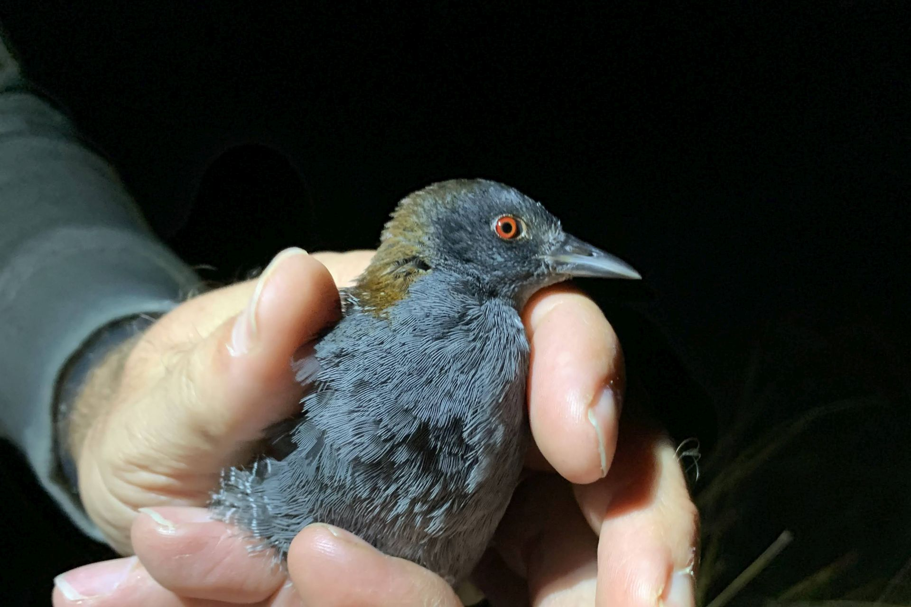
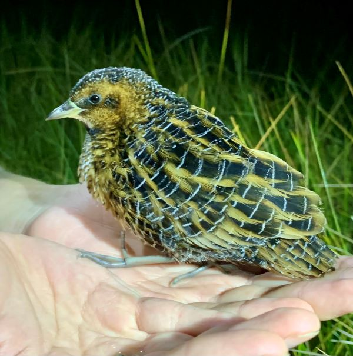
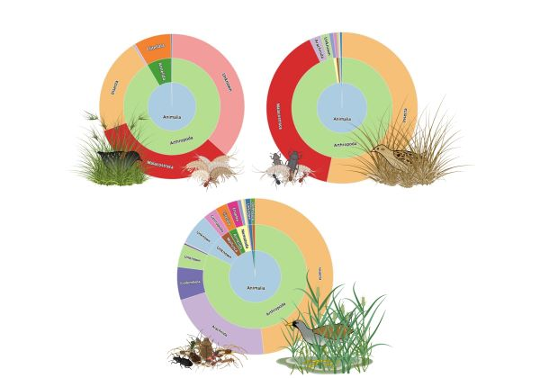
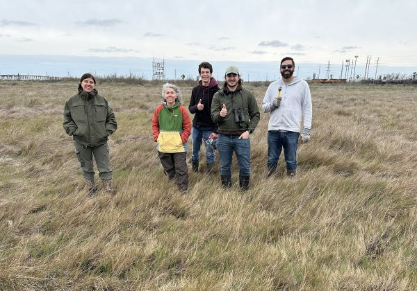
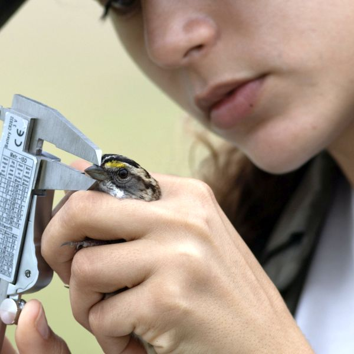

Welcome to the Butler Avian Ecology Lab
Get StartedAbout
The lab strives to foster a collaborative and inquiry-driven environment to understand and predict the ecological and evolutionary impacts of anthropogenic change, with a commitment to generating actionable solutions for species conservation and habitat management.
Our lab studies how animals interact with their environments across scales—from individual behaviors and physiological processes to species distributions and community dynamics. Much of our work centers on birds, particularly secretive and understudied species like the Eastern Black Rail and Yellow Rail, as we aim to inform effective conservation and management strategies for declining populations.

We use an integrative approach that combines field ecology, bioacoustics, molecular techniques (such as fecal DNA metabarcoding), and spatial modeling to understand where species occur, what they eat, how they use their habitat, and how they respond to environmental change. Recent projects have investigated the dietary ecology of marsh birds, predicted future range shifts under climate change, and assessed how land management practices (e.g., fire and grazing) influence habitat use.

Our research is grounded in collaboration—with wildlife agencies, conservation organizations, and academic partners—and is committed to generating actionable science that supports biodiversity conservation. We are also deeply invested in training the next generation of scientists, with many undergraduates and graduate students contributing to our publications and field efforts.
In addition to birds, we’ve explored broader ecological questions involving fish, parrots, and palms, united by a common goal: understanding how species adapt to dynamic and often human-altered landscapes.

Team
Necessitatibus eius consequatur ex aliquid fuga eum quidem sint consectetur velit

Dr. Chris Butler
Instructional Associate Professor of Biology
Tabitha Olsen
PhD student - Ecology & Evolutionary Biology
Trevor Markwood
M.Sc. student - Biology
Aeris Clarkson
Undergraduate Student - ZoologyPublications
2025
Nguyen, B., J. Messick, A. Rodger, V. Jackson, C. Butler, and A. Taylor. (2025). Lumping and splitting of distribution models across a biogeographic divide informs the conservation of an imperiled fluvial fish. Ecology and Evolution.
2024
Bartnicki, R. A. Snow, A. T. Taylor, and C. J. Butler. (2024). Use of multiple climate change scenarios to predict future distributions of alligator gar (Atractosteus spatula) in the United States. Environmental Biology of Fishes 107: 1475-1483.
Olsen, T. W., G. A. Apte, and C. J. Butler. (2024). Winter detection of an Eastern Black Rail (Laterallus jamaicensis jamaicensis) fledgling and of pair formation using thermal imaging. Waterbirds 47: 1-9.
2023
Butler, C. J., J. B. Tibbits, and J. K. Wilson. (2023). Black Rail occupancy and detectability in the Texas Mid-Coast National Wildlife Refuge. Waterbirds 46: 1-12.
Olsen, T. W., T. Barron, and C. J. Butler. (2023). Preliminary assessment of thermal imaging equipped aerial drones for secretive marsh bird detection. Drone Systems and Applications 11: 1-9.
Butler, C.J., T. W. Olsen, J. K. Wilson, J. O. Woodrow, C. Johnson, and T. Barron. (2023). Yellow rail auditory detection during the non-breeding season. Journal of Wildlife Management e22368
2022
Butler, C. J. (2022). Little evidence of leaf damage to dwarf palmetto (Sabal minor; Arecaceae) during an unusual arctic outbreak. Ecologies. 3:267-274.
Butler, C.J., T. W. Olsen, B. Kephart, J. K. Wilson, and A. A. Haverland. (2022). Interannual winter site fidelity for Yellow and Black Rails. Diversity. 14: 357.
2021
Butler, C. J. A. M. V. Fournier, and J. K. Wilson. (2021). Estimates of breeding season location for 4 mesic prairie bird species wintering along the Gulf Coast. Wilson Journal of Ornithology. 133: 177-189.
Bartnicki, J., R.A. Snow, A.T. Taylor, and C.J. Butler. (2021). An alternative, low-cost method to chill water for critical thermal minima trials. Journal of Applied Ichthyology. DOI 10.1111/jai.14209.
Bartnicki, J., R.A. Snow, A.T. Taylor, and C.J. Butler. (2021). Critical thermal minima of alligator gar (Atractosteus spatula, [Lacépède, 1803]) during early life stages. Journal of Applied Ichthyology. DOI 10.1111/jai.14209.
Butler, C. J., C. King, and D.L. Reinking. (2021). Do citizen science methods identify regions of high avian biodiversity? Diversity 13: 656.
2020
Butler, C. J. and M. A. Larson. (2020). Climate change winners and losers: the effects of climate change on five palm species in the southeastern USA. Ecology and Evolution 10: 1–18.
Marshall, D. and C.J. Butler. (2020). Potential distribution of the biocontrol agent Toxorhynchites rutilus by 2070. Journal of the American Mosquito Control Association 36: 131-138.
Opportunities
If you are interested in joining the lab as a PhD student or a MSc student, there are typically only enough funds available to bring on one person per year
If you are interested in avian ecology or conservation, please feel free to reach out
In addition to being a good fit for the lab, I typically look for the following in my students
- Excellent research experience related to birds
- GPA >3.5
- Publication(s)
- Posters/presentations
- Teaching/mentoring experience
Classes
I teach BIO 214, BIOL 318, BIOL 357, BIOL 291/491
BIOL 214 - Genes, Ecology and Evolution
Credits 3. 3 Lecture Hours. A genetically-based introduction to the study of ecology and evolution; emphasis on the interactions of organisms with each other and with their environment. Prerequisite: BIOL 112.
BIOL 318 - Chordate Anatomy
Credits 4. 3 Lecture Hours. 3 Lab Hours. Classification, phylogeny, comparative anatomy, and biology of chordates; diversity, protochordates, vertebrate skeletons, shark and cat anatomy studied in laboratory. Prerequisite: BIOL 214 or approval of instructor.
BIOL 357 - Ecology
Credits 3. 3 Lecture Hours. Analysis of ecosystems at organismal, population, interspecific and community levels. Prerequisite: BIOL 214 or approval of instructor.
BIOL 291/491 - Undergraduate Research
Credits 0 to 4. Active research of basic nature under the supervision of a Department of Biology faculty member. May be taken two times. BIOL 291 is for freshman/sophomore standing, while BIOL 491 is for junior/senior standing Prerequisite: Approval of departmental faculty member.
Learn MoreContact
Physical Address
307 Butler Hall, 525 Lubbock Street, College Station, TX 77840
Mailing Address
3258 TAMU, College Station, TX 77843
Call Us
+1 979 862 3403
Email Us
chris.butler@tamu.edu